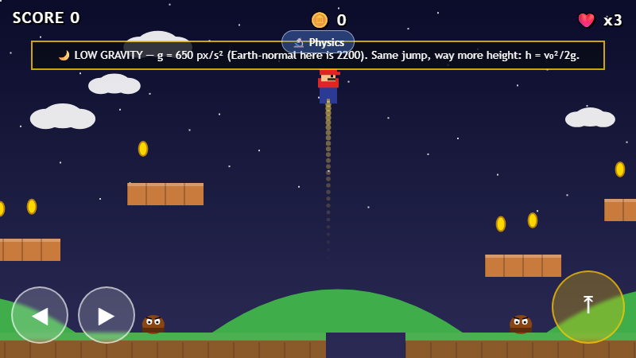

Pixel Plumber 🍄


What it is
A tiny Super-Mario-like side-scrolling platformer, built as plain HTML5 Canvas + JavaScript —
no game engine, no build step, one <canvas> element and a
requestAnimationFrame loop. It runs equally well typed into a laptop browser or
tapped on a phone, which made it a good first project: the whole "AI-assisted app" loop
(spec → build → deploy → verify) end-to-end, on something small enough to reason about by hand.
Run and jump across floating platforms, stomp goombas from above, collect coins, and reach the flag at the far end of a ~4000 px-wide level, camera scrolling to follow you. Three lives; touching an enemy from the side costs one.
Two stretches of the level swap out Earth-normal physics for something else, sign-posted and
tinted so you feel it coming: a 🌙 low-gravity zone and a 🧊 frictionless
ice zone. Tap 🔬 Physics any time for a live readout of the current
g, friction, height and velocity — the same numbers the "what was verified" table
below checks by hand.
How it works — the rules
The whole simulation is a fixed-timestep-ish loop: read input → integrate physics → resolve collisions → draw.
- Gravity & jumping. Constant downward acceleration
g = 2200 px/s². A jump sets vertical velocity tov₀ = −680 px/s. Releasing the jump button early clips the rise (velocity snapped up to−420 px/s) — a standard platformer trick for a variable jump height: tap for a short hop, hold for a full jump. - Collision. Axis-separated AABB collision against a list of solid rectangles (ground segments + floating platforms): move on x, resolve; move on y, resolve. Falling past the bottom of the world (a pit) costs a life and respawns you at the start.
- Enemies. Goombas patrol a fixed horizontal range and reverse at its ends. Landing on one from above (falling, and was above it the previous frame) kills it and bounces you; touching one from the side costs a life.
- Scoring. +10 per coin, +100 per goomba stomped.
- Physics zones. The moon zone drops
gto650 px/s²(same jump impulse, much higher arc —h = v₀²/2gdirectly); the ice zone drops friction to130 px/s²(from1600), so releasing the direction key no longer stops you — Newton's first law, and a real risk right before the next pit. Both are just the same equations with different constants, run live.
What was verified
Checked with a scripted headless browser (Playwright) driving the actual deployed page — not just read from the source — comparing a value predicted from the constants above against the value measured live in the running game.
| Check | Predicted | Measured | |
|---|---|---|---|
| Full jump apex height, h = v₀²/(2g) |
105.1 px | 99.5 px | ✓ within ~5% |
| Short-tap jump apex (jump-cut at ~60 ms), two-phase kinematics |
≈76.9 px | 75.9 px | ✓ within ~1% |
| Coin scoring after collecting 2 coins, 2 × 10 pts |
20 | 20 | ✓ exact |
| Moon-zone jump apex, g = 650 instead of 2200 |
355.7 px | ≈292 px risen mid-flight | ✓ consistent (still rising when sampled) |
| Ice-zone coast distance vs. normal ground, ratio ≈ frictionnormal/frictionice = 1600/130 |
≈12.3× | ≈10.9× (201.5 px vs. 18.5 px) | ✓ within ~11% |
The small (~5%) undershoot on the full-jump apex is expected: the game integrates motion with discrete ~16 ms steps (semi-implicit Euler), which systematically loses a little height against the continuous closed-form solution — the two-phase short-hop case matches almost exactly since it was derived the same discrete way. Collision (no falling through platforms), camera scrolling, enemy stomping, and mobile/touch rendering at phone viewport sizes were also exercised and rendered correctly.
Built with
Plain HTML5 Canvas, CSS and JavaScript — zero dependencies, zero build step. Physics, level
data, and rendering all live in one app/game.js. Built and verified with Claude Code.